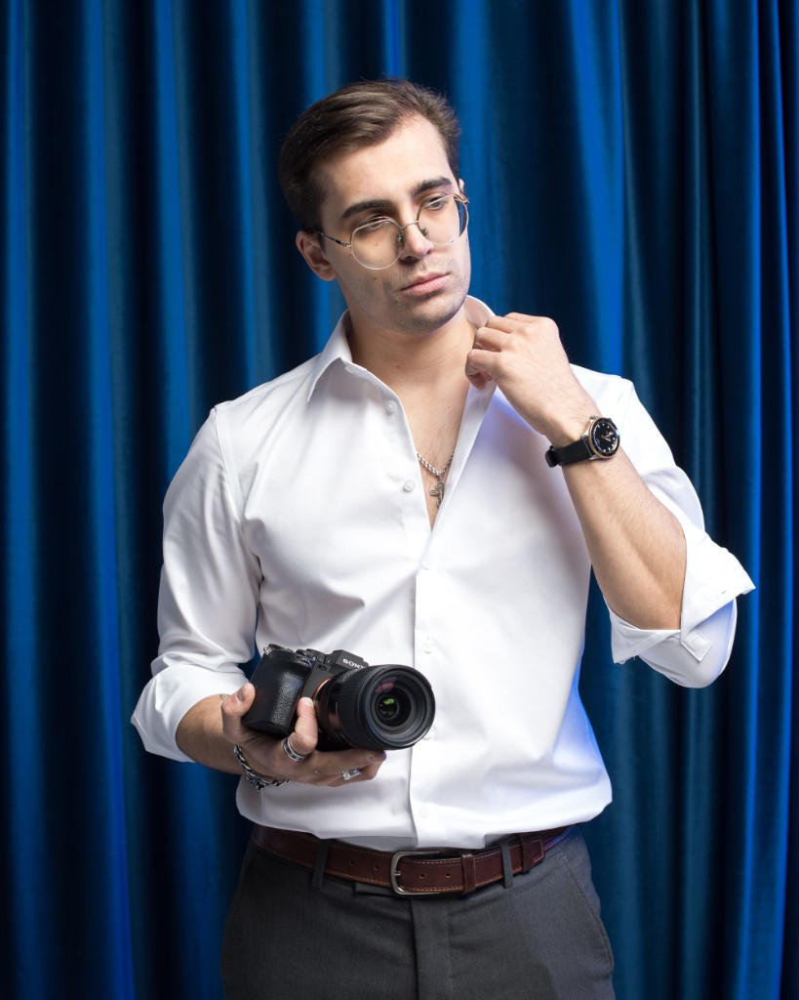

Репортажи
Видеограф · Москва
Антон Кугук
Снимаю и собираю видео под задачу: репортаж с площадки, эдит, экспертный REELS, motion и цвет. На выходе готовый ролик, который можно сразу публиковать.

Мои работы
Эдиты
Экспертные и разговорные REELS
Motion-design
Цветокоррекция
В этом разделе роликов пока нет.
Стоимость
Репортажи
Съёмка события и сборка в ролик.
Эдиты
Монтаж уже снятого материала.
Экспертные и разговорные REELS
Короткий ролик, в котором человек говорит по делу.
Motion-design
Титры, плашки и графика в кадре.
Цветокоррекция
Цвет, из которого ролик выглядит цельным.
ЧАВО
Телефон тянет бытовую картинку. Для репортажа, эдита и экспертного REELS нужен нормальный кадр, звук и свет. Иначе монтаж не спасёт.
Съёмка и монтаж считаются отдельно. Эдит, motion и цветокоррекция тоже отдельные задачи. Что входит в работу, фиксируется до старта.
Срок зависит от длины, количества исходников и правок. Его называют до начала, а не после съёмки.
Да. Цвет — отдельная услуга. Если он нужен внутри эдита или репортажа, это видно в задаче заранее.
Можно, если понятно, что человек должен понять из ролика. Без этой фразы съёмка превращается в набор кадров.
Готовый ролик отдаётся всегда. Исходники — только если это отдельно проговорено до работы.